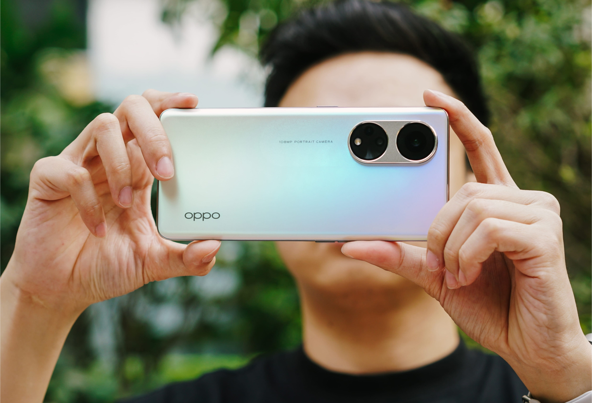
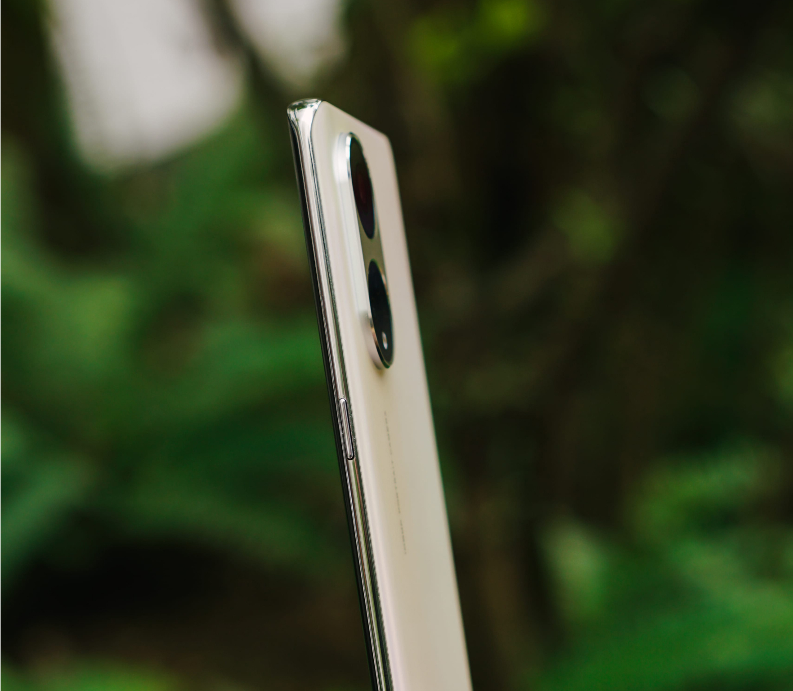
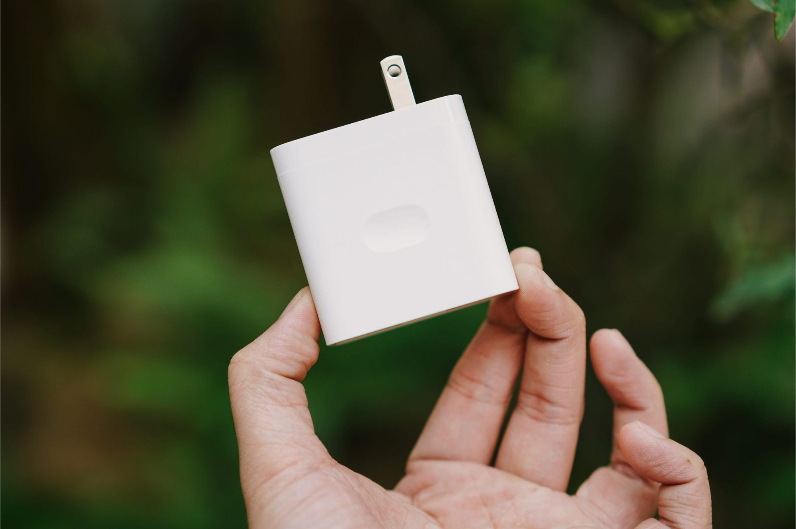
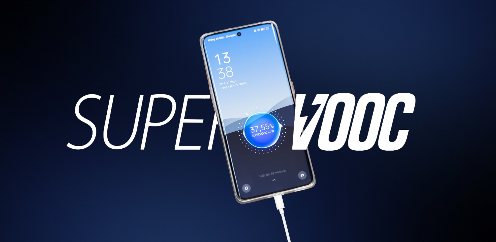
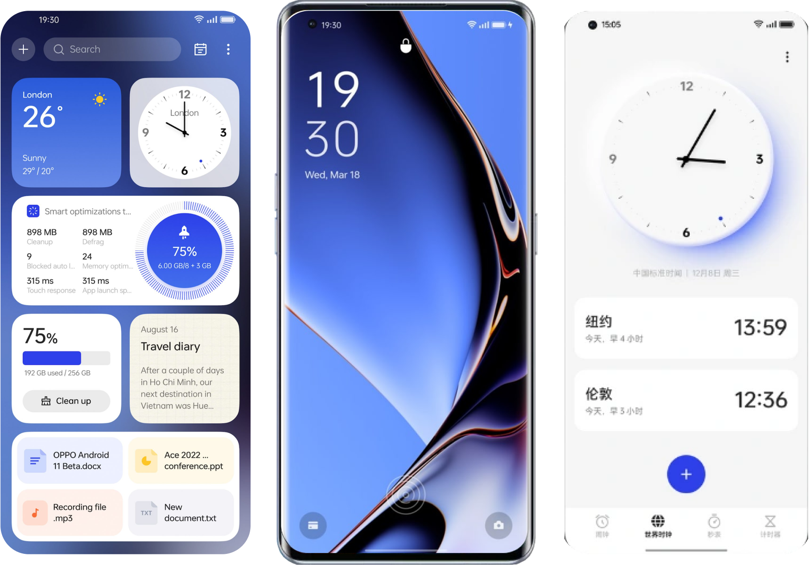
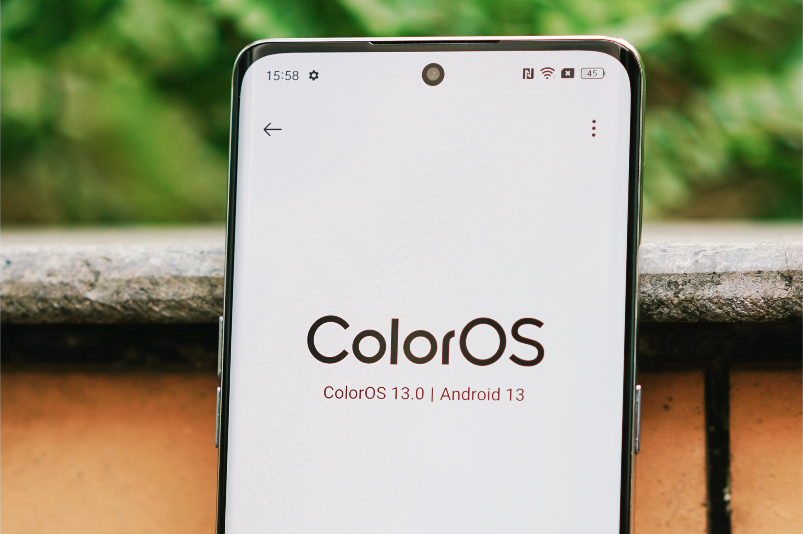
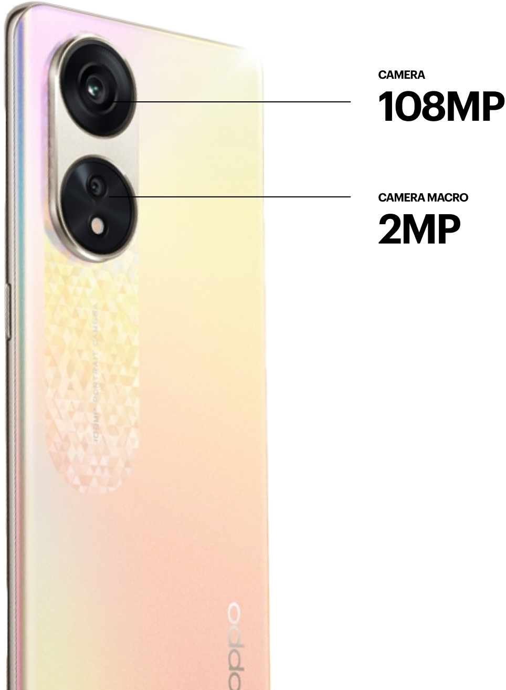
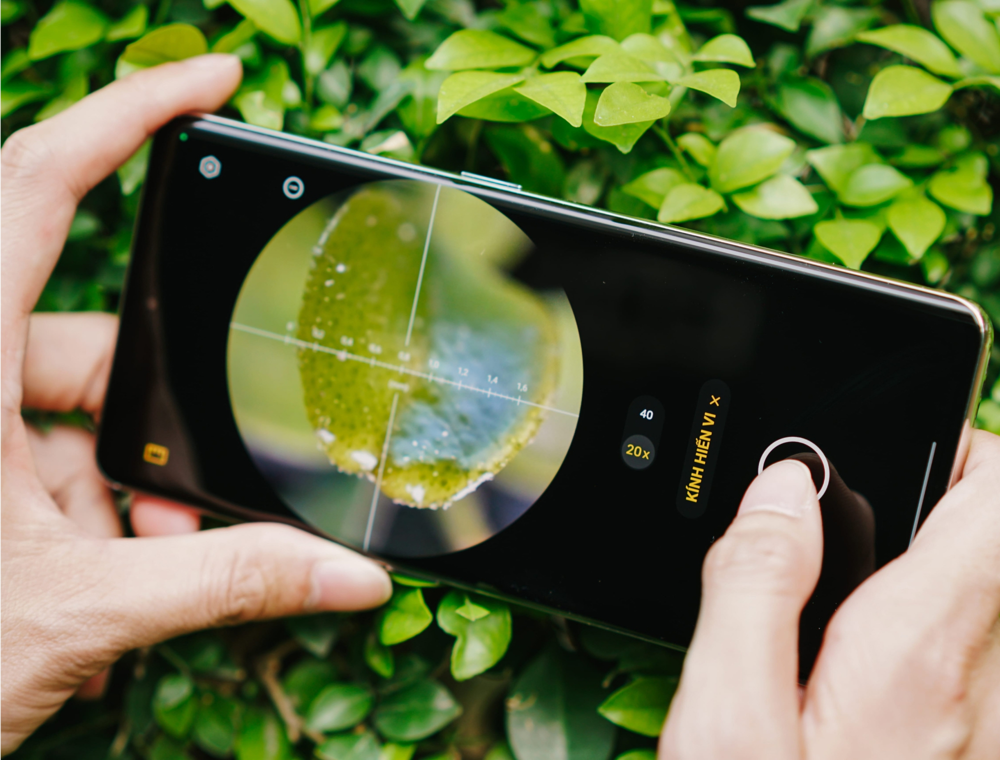

eMAgazine
OPPO
2023
Bài viết: MÌNH ĐỨC
ẢNH: MInh ĐỨC
Thiết kế: Trường Dương
INTERACTIVE: TUNgTT
Cảm nhận đầu tiên về
OPPO Reno8 T 5G
Smartphone
tầm trung mang
dáng hình cao cấp
tầm trung mang
dáng hình cao cấp

Bạn nghĩ rằng OPPO đã hết ý tưởng khi ra mắt tới 4 smartphone trong dòng Reno 8? Thành viên thứ 5 mang
tên Reno8 T 5G đã được ra mắt để phá tan đi sự hoài nghi này. Hãy cùng tôi trên tay nhanh để xem dòng
máy này có gì đáng mong chờ!
eMAgazine
OPPO
2023
Khi còn chưa cầm lên tay
Tính chất bài viết là “Trên tay”, nhưng kể cả khi chưa cầm trên tay
tôi cũng đã có những ấn tượng khá mạnh về vẻ ngoài của máy. Mặt lưng của máy sở hữu thiết kế
“OPPO Glow” rất đặc trưng, đặt ở những nơi có nắng mạnh sẽ hiện lên đầy đủ 7 sắc cầu vồng lại có
những chấm kim tuyến óng ánh.


Hệ thống camera được chia thành 2 cụm rõ rệt, đặt bên trong một dải oval với dòng chữ nhỏ
giới thiệu về camera chính độ phân giải cao 108MP - tính năng mà một lúc nữa chắc chắn tôi
sẽ phải thử. Phải nói rằng ai nhìn vào mặt lưng của Reno8 T 5G cũng sẽ nhận ra ngay đây là
dòng máy dành cho giới trẻ từ “nhà” OPPO chứ không phải từ hãng nào khác.


Smartphone giờ đều khá to và nặng, nên có lẽ bàn tay tôi cũng đã quen với điều này rồi. Cũng
vì vậy mà trong lần đầu tiên cầm Reno8 T 5G tôi bỗng thấy hơi bất ngờ về độ mỏng nhẹ của
máy. Reno8 T 5G có độ mỏng chỉ 7.7mm và cân nặng 170g, cầm gọn trong lòng bàn tay và cũng
không cho cảm giác bị “trĩu” về phía trước.
Kết hợp với đó là những cạnh viền được bo tròn mềm mại, sẽ không đè, cấn gây khó chịu trong những giờ giải trí với game của tôi. Độ mỏng nhẹ của máy cũng sẽ là ưu điểm với những người mặc quần bò, quần kaki slimfit. Máy dễ dàng đặt ở túi quần trước và không đè lên chân, không lồi lên làm mất thẩm mỹ.
Kết hợp với đó là những cạnh viền được bo tròn mềm mại, sẽ không đè, cấn gây khó chịu trong những giờ giải trí với game của tôi. Độ mỏng nhẹ của máy cũng sẽ là ưu điểm với những người mặc quần bò, quần kaki slimfit. Máy dễ dàng đặt ở túi quần trước và không đè lên chân, không lồi lên làm mất thẩm mỹ.


Tôi không nghĩ là máy
sẽ mỏng nhẹ vậy
sẽ mỏng nhẹ vậy
eMAgazine
OPPO
2023
Smartphone giờ đều khá to và nặng, nên có lẽ bàn tay tôi cũng đã quen với điều này rồi. Cũng vì
vậy mà trong lần đầu tiên cầm Reno8 T 5G tôi bỗng thấy hơi bất ngờ về độ mỏng nhẹ của máy. Reno8
T 5G có độ mỏng chỉ 7.7mm và cân nặng 170g, cầm gọn trong lòng bàn tay và cũng không cho cảm
giác bị “trĩu” về phía trước.
Kết hợp với đó là những cạnh viền được bo tròn mềm mại, sẽ không đè, cấn gây khó chịu trong những giờ giải trí với game của tôi. Độ mỏng nhẹ của máy cũng sẽ là ưu điểm với những người mặc quần bò, quần kaki slimfit. Máy dễ dàng đặt ở túi quần trước và không đè lên chân, không lồi lên làm mất thẩm mỹ.
Kết hợp với đó là những cạnh viền được bo tròn mềm mại, sẽ không đè, cấn gây khó chịu trong những giờ giải trí với game của tôi. Độ mỏng nhẹ của máy cũng sẽ là ưu điểm với những người mặc quần bò, quần kaki slimfit. Máy dễ dàng đặt ở túi quần trước và không đè lên chân, không lồi lên làm mất thẩm mỹ.

eMAgazine
OPPO
2023
Pin không bị
ảnh hưởng bởi
độ mỏng
ảnh hưởng bởi
độ mỏng

Thường thì “được cái này” thì sẽ “mất cái kia”, máy làm mỏng quá thì sẽ không còn không gian để
trang bị viên pin dung lượng lớn ảnh hưởng đến thời lượng pin sử dụng cuối cùng. OPPO cân bằng giữa
2 yếu tố này khi vẫn trang bị cho Reno8 T 5G viên pin 4800 mAh - không thể nói là cao nhất nhưng vẫn
thuộc top trên trong thị trường smartphone.
Viên pin này sẽ chỉ phải “gánh” cấu hình xử lý tầm trung của máy là chip Snapdragon 695 nên cũng sẽ có thể sử dụng được lâu hơn rất nhiều so với các dòng máy với dung lượng pin tương tự nhưng với chip Snapdragon 7 và 8.
Viên pin này sẽ chỉ phải “gánh” cấu hình xử lý tầm trung của máy là chip Snapdragon 695 nên cũng sẽ có thể sử dụng được lâu hơn rất nhiều so với các dòng máy với dung lượng pin tương tự nhưng với chip Snapdragon 7 và 8.
eMAgazine
OPPO
2023
Cắm sạc nhanh
SuperVOOC 67W
SuperVOOC 67W
Khi mới lấy máy ra khỏi hộp và set-up những bước ban đầu xong thì chỉ còn khoảng 17% pin nên
tôi quyết định sạc trước khi trải nghiệm tiếp. Cũng may là máy đi kèm củ và dây sạc tích hợp
công nghệ SuperVOOC 67W nên tốc độ sạc lại pin cũng rất nhanh. Tôi cắm sạc khoảng 20 phút,
đi làm việc khác và quay lại thì máy đã đạt 65%, đủ để tôi “nghịch” thêm máy ngoài đường
trước khi về nhà vào cuối ngày.


eMAgazine
OPPO
2023
Màn hình
không hề “xoàng”
không hề “xoàng”
Mặt lưng của phải là thứ duy nhất “nhiều màu sắc” trên Reno8 T 5G, màn hình của chiếc máy này
cũng “làm màu” tốt hơn so với rất nhiều dòng máy trên thị trường. Máy sở hữu màn hình OLED 6.7
inch FullHD+ 1.07 tỷ màu 120Hz. Cảm nhận đầu tiên của tôi với màn hình của Reno8 T 5G là có độ
bão hòa màu cao, các màu sắc có chiều sâu chứ không bệt và có nhiệt độ màu trung tính tạo cảm
giác “đã mắt” từ màn hình chính tới các video Youtube, phim Netflix.
Tần số 120Hz giúp mọi yếu tố chuyển cảnh trong ColorOS 13 như “mượt” hơn, chỉ cần lướt web thôi cũng đã thấy được sự khác biệt rồi. Việc màn hình này được làm cong nhẹ 2 bên, viền trên dưới cũng khá mỏng càng làm tôi tưởng đây là một dòng máy cao cấp chứ không phải định giá ở phân khúc tầm trung. Nếu như lấy nguyên màn hình này và đặt vào flagship, có lẽ nhiều người sẽ không phàn nàn gì!
Tần số 120Hz giúp mọi yếu tố chuyển cảnh trong ColorOS 13 như “mượt” hơn, chỉ cần lướt web thôi cũng đã thấy được sự khác biệt rồi. Việc màn hình này được làm cong nhẹ 2 bên, viền trên dưới cũng khá mỏng càng làm tôi tưởng đây là một dòng máy cao cấp chứ không phải định giá ở phân khúc tầm trung. Nếu như lấy nguyên màn hình này và đặt vào flagship, có lẽ nhiều người sẽ không phàn nàn gì!
eMAgazine
OPPO
2023
ColorOS 13 đầy màu sắc và tính năng kèm theo

Reno8 T 5G sử dụng phần mềm là ColorOS 13 mới nhất, với triết lý thiết kế mà hãng gọi là “Thủy
hình” (Anamorphic Design) với sự mong muốn là mọi thứ sẽ “trôi chảy”, mượt mà như nước. Về đánh
giá thực tế, hệ điều hành mới nhất từ “nhà” OPPO vẫn giữ bộ màu sắc rất sặc sỡ nên các yếu tố
được phân biệt rõ ràng với nhau, đa phần theo hướng phẳng nên cũng tạo cảm giác trẻ trung, hiện
đại.
ColorOS 13 đi kèm với khá nhiều những tính năng hỗ trợ như màn hình luôn hiện thông minh (Smart Always-On Display), ảnh động Omoji, không gian cho trẻ em Kid Space, đồng hồ biến đổi thiết kế theo thời gian và tăng độ mượt giao diện nhờ công nghệ Hình động lượng tử (Quantum Animation Engine)... Tất cả tạo nên sự thuận tiện cũng như tùy biến cao.
ColorOS 13 đi kèm với khá nhiều những tính năng hỗ trợ như màn hình luôn hiện thông minh (Smart Always-On Display), ảnh động Omoji, không gian cho trẻ em Kid Space, đồng hồ biến đổi thiết kế theo thời gian và tăng độ mượt giao diện nhờ công nghệ Hình động lượng tử (Quantum Animation Engine)... Tất cả tạo nên sự thuận tiện cũng như tùy biến cao.

eMAgazine
OPPO
2023
Chụp nhanh ảnh “soi” độ nét và “soi” các vật nhỏ
Như đã đề cập ở trên thì Reno8 T 5G sở hữu camera chính với độ phân giải cao 108MP. Chụp ảnh
thông thường thì máy sẽ gộp những điểm ảnh lại để cho độ phân giải “thông thường” 12MP, chỉ khi
nào ta cần độ nét cao nhất thì mới chuyển sang một chế độ “Hi-res” riêng. Sự khác biệt về độ nét
cũng như những yếu tố khác trong chất lượng ảnh sẽ được đánh giá chi tiết hơn trong một bài viết
khác.

Một camera khác của máy cũng thú vị không kém là cam macro 2MP dạng “hiển vi”, cho phép chụp cả
những sự vật nhỏ chỉ vài mm. Loại camera chụp gần này tôi đánh giá cao hơn, tạo được nhiều góc
thú vị hơn so với loại camera macro góc siêu rộng, chỉ có khoảng cách lấy nét 2 - 3cm
khác.
Nhược điểm trong hệ thống chụp hình của Reno8 T 5G là thiếu đi những tiêu cự rộng, xa để thay đổi góc nhìn một cách dễ dàng như flagship. Camera cuối cùng của máy chỉ là cảm biến 2MP đo chiều sâu, nên Reno8 T 5G thiếu đi camera siêu rộng, camera tele zoom xa. Đây là một yếu tố máy đã bị cắt giảm so với các phiên bản đắt tiền hơn, những bạn thích chụp ảnh di động nên để ý.
Nhược điểm trong hệ thống chụp hình của Reno8 T 5G là thiếu đi những tiêu cự rộng, xa để thay đổi góc nhìn một cách dễ dàng như flagship. Camera cuối cùng của máy chỉ là cảm biến 2MP đo chiều sâu, nên Reno8 T 5G thiếu đi camera siêu rộng, camera tele zoom xa. Đây là một yếu tố máy đã bị cắt giảm so với các phiên bản đắt tiền hơn, những bạn thích chụp ảnh di động nên để ý.


eMAgazine
OPPO
2023
Những cảm nhận đầu tích cực, nhưng cần thêm thời gian đánh giá
nữa
Sau khoảng nửa ngày mở hộp và sử dụng nhanh Reno8 T 5G, những cảm nhận đầu của tôi với máy
là hoàn toàn tích cực. Máy không sở hữu cấu hình cao nhất với Snapdragon 695, có sự cắt giảm
về tiêu cự chụp hình nhưng vẫn thể hiện được sự cao cấp trong thiết kế, khả năng pin - sạc
và hiển thị.
Chắc chắn trong thời gian tới chúng tôi sẽ còn gửi tới độc giả một bài viết đánh giá chi tiết hơn, chân thực hơn về chiếc máy này. Hãy cùng đón đọc!
Chắc chắn trong thời gian tới chúng tôi sẽ còn gửi tới độc giả một bài viết đánh giá chi tiết hơn, chân thực hơn về chiếc máy này. Hãy cùng đón đọc!
Cảm nhận đầu tiên về
OPPO Reno8 T 5G
Bài viết: MÌNH ĐỨC
ẢNH: MInh ĐỨC
Thiết kế: Trường Dương
INTERACTIVE: TUNgTT
Theo: Tổ quốc